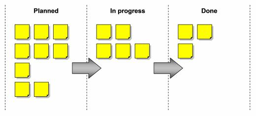

Intro 2 SCRUM
Una breve introduzione a SCRUM
Scopo di questo talk
Manifesto for Agile Software Development
Individui e interazioni, software funzionante, collaborazione con il cliente, rispondere al cambiamento.
nel 2001, 17 persone si sono riuniti nelle montagne Wasatch dello Utah per trovare un terreno comune intorno Agile. Dopo tanto sci, parlare, rilassarsi e mangiare, arrivarono a quattro valori comuni che hanno portato allo sviluppo del Manifesto Agile.
AgileManifestoAgileIsDead
Wip & Multitasking
Wip & Multitasking
Waterfall
Rilascio di valore costante
Rilascio di valore costante
Rilascio di valore costante
Rilascio di valore costante
Rilascio di valore costante
Rilascio di valore costante
Rilascio di valore costante
Rilascio di valore costante
Rilascio di valore costante
SCRUM
In Scrum, il lavoro si esprime dall’arretrato in termini di storie delle persone. Le storie documentano i requisiti con particolare attenzione al punto di vista dell'utente finale.
L’adozione di Scrum porta tre grandi vantaggi per l'organizzazione: costruisce una cultura della comunicazione, migliora la trasparenza e mostra la big-picture, promuove la leadership e scatena la creatività.
User Story
Persone
Product Owner
Scrum Master
Scrum Team
Eventi
Lo Sprint

Daily meeting
Sprint Review

Retrospective
Sprint Planning meeting
Backlog Refinement
ARTEFATTI
In Scrum ci sono delle parti che possono essere considerate degli artefatti. Sono fgeneralmente fisici, raccolti in postit sul muro ma possono essere anche digitali, ad esempio usando Trello.
Product Backlog
Sprint Kanban
links ;)
Grazie!